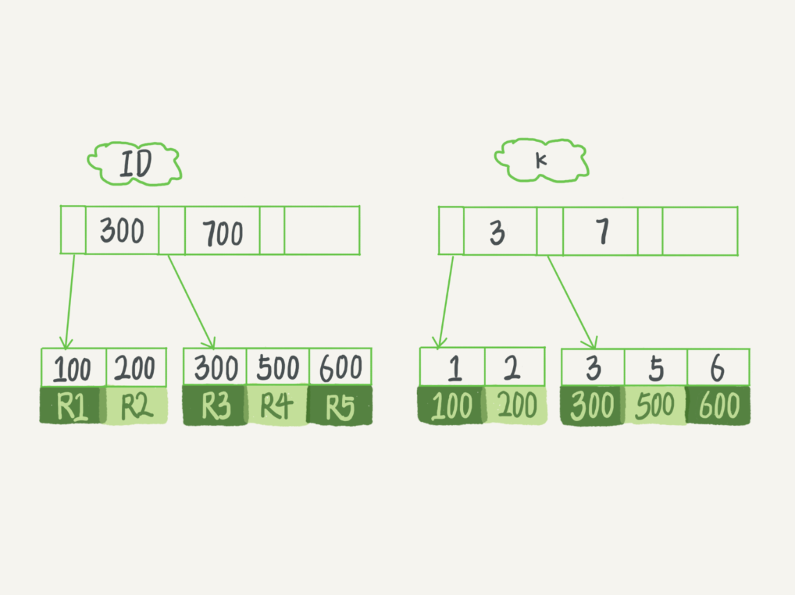

参考原文：MySQL实战45讲一一一极客时间
根据例子详细讲讲普通索引和唯一索引的区别，以及不同的场景下如何选择更合适的索引。
首先我们就从这两种索引对查询语句和更新语句的性能影响来进行分析。
查询过程
假设，执行查询的语句是
select id from T where k=5
这个查询语句在索引树上查找的过程，先是通过 B+ 树从树根开始，按层搜索到叶子节点，也就是图中右下角的这个数据页，然后可以认为数据页内部通过二分法来定位记录。
- 对于普通索引来说，查找到满足条件的第一个记录 (5,500) 后，需要查找下一个记录，直到碰到第一个不满足 k=5 条件的记录。
- 对于唯一索引来说，由于索引定义了唯一性，查找到第一个满足条件的记录后，就会停止继续检索。
那么，这个不同带来的性能差距会有多少呢？答案是，微乎其微。
因为引擎是按页读写的，所以说，当找到 k=5 的记录的时候，它所在的数据页就都在内存里了。那么，对于普通索引来说，要多做的那一次“查找和判断下一条记录”的操作，就只需要一次指针寻找和一次计算。
当然，如果 k=5 这个记录刚好是这个数据页的最后一个记录，那么要取下一个记录，必须读取下一个数据页，这个操作会稍微复杂一些。对于整型字段，一个数据页可以放近千个 key，因此出现这种情况的概率会很低。所以，我们计算平均性能差异时，仍可以认为这个操作成本对于现在的 CPU 来说可以忽略不计。
对于查询语句来说，普通索引和唯一索引带来的性能差距是微乎其微的。
🌶🌶更新过程
为了说明普通索引和唯一索引对更新语句性能的影响这个问题，需要先理解 change buffer。
当需要更新一个数据页时，如果数据页在内存中就直接更新，而如果这个数据页还没有在内存中的话，在不影响数据一致性的前提下，InnoDB 会将这些更新操作缓存在 change buffer 中，这样就不需要从磁盘中读入这个数据页了。在下次查询需要访问这个数据页的时候，将数据页读入内存，然后执行 change buffer 中与这个页有关的操作。通过这种方式就能保证这个数据逻辑的正确性。
【然后执行
change buffer中与这个页有关的操作】：🌶🌶这里操作为：
从磁盘读入数据页到内存（老版本的数据页）；
从
change buffer里找出这个数据页的change buffer记录 (可能有多个），依次应用，得到新版数据页；写
redo log。这个redo log包含了数据的变更和 change buffer 的变更。也就是下文所说的
merge
需要说明的是，虽然名字叫作 change buffer，实际上它是可以持久化的数据。也就是说，change buffer 在内存中有拷贝，也会被写入到磁盘上。
将 change buffer 中的操作应用到原数据页，得到最新结果的过程称为 merge。除了访问这个数据页会触发 merge 外，系统有后台线程会定期 merge。在数据库正常关闭（shutdown）的过程中，也会执行 merge 操作。
如果能够将更新操作先记录在
change buffer，减少读磁盘，语句的执行速度会得到明显的提升。而且，数据读入内存是需要占用buffer pool的，所以这种方式还能够避免占用内存，提高内存利用率。
那么，什么条件下可以使用 change buffer 呢？
对于唯一索引来说，所有的更新操作都要先判断这个操作是否违反唯一性约束。比如，要插入 (4,400) 这个记录，就要先判断现在表中是否已经存在 k=4 的记录，而这必须要将数据页读入内存才能判断。如果都已经读入到内存了，那直接更新内存会更快，就没必要使用 change buffer 了。
因此，唯一索引的更新就不能使用 change buffer，实际上也只有普通索引可以使用。
change buffer 用的是 buffer pool 里的内存，因此不能无限增大。``change buffer的大小，可以通过参数innodb_change_buffer_max_size` 来动态设置。这个参数设置为 50 的时候，表示 change buffer 的大小最多只能占用 buffer pool 的 50%。
🌶🌶🌶接下来，如果要在这张表中插入一个新记录 (4,400) 的话，InnoDB 的处理流程是怎样的。
🌶第一种情况是，这个记录要更新的目标页在内存中。这时，InnoDB 的处理流程如下：
- 对于唯一索引来说，找到 3 和 5 之间的位置，判断到没有冲突，插入这个值，语句执行结束；
- 对于普通索引来说，找到 3 和 5 之间的位置，插入这个值，语句执行结束。
在第一种情况下，普通索引和唯一索引对更新语句性能影响的差别，只是一个判断，只会耗费微小的 CPU 时间。
🌶🌶🌶第二种情况是，这个记录要更新的目标页不在内存中。这时，InnoDB 的处理流程如下：
- 对于唯一索引来说，需要将数据页读入内存，判断到没有冲突，插入这个值，语句执行结束；
- 对于普通索引来说，则是将更新记录在 change buffer，语句执行就结束了。
这里普通索引没有将数据页从磁盘读入内存，而是直接更新记录在
change buffer，而将数据从磁盘读入内存涉及随机 IO 的访问，是数据库里面成本最高的操作之一。因此change buffer对更新性能的提升是会很明显的。
change buffer 的使用场景
那么，现在有一个问题就是：普通索引的所有场景，使用 change buffer 都可以起到加速作用吗？
因为 merge 的时候是真正进行数据更新的时刻，而 change buffer 的主要目的就是将记录的变更动作缓存下来，所以在一个数据页做 merge 之前，change buffer 记录的变更越多（也就是这个页面上要更新的次数越多），收益就越大。
因此，对于写多读少的业务来说，页面在写完以后马上被访问到的概率比较小，此时 change buffer 的使用效果最好。这种业务模型常见的就是账单类、日志类的系统。
反过来，假设一个业务的更新模式是写入之后马上会做查询，那么即使满足了条件，将更新先记录在 change buffer，但之后由于马上要访问这个数据页，会立即触发 merge 过程。这样随机访问 IO 的次数不会减少，反而增加了 change buffer 的维护代价。所以，对于这种业务模式来说，change buffer 反而起到了副作用。
写多读少的业务适合使用
change buffer，因为每次读取访问数据页都要merge，少的读取数据能让change buffer起到较好的加速作用。